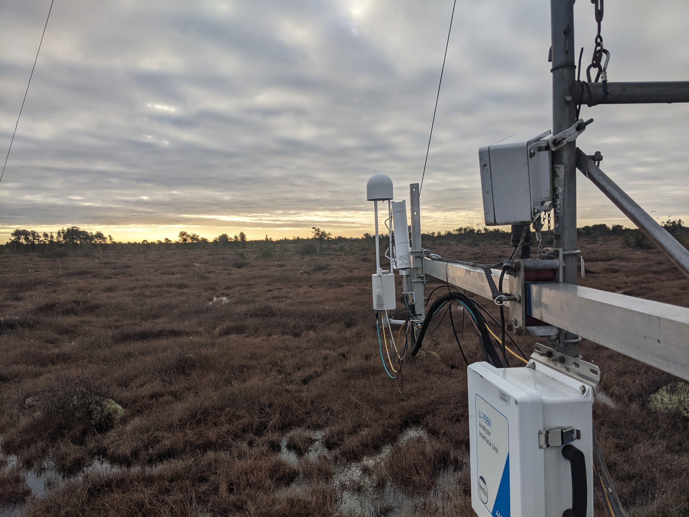

Eddy Covariance
Ecosystem-scale fluxes of energy, water, and trace gases.
Spatially integrated, semi-continuous
Noisy, voluminous data
- Ideally suited for NN analysis!

Burns Bog EC Station
Delta, BC
Neural Networks
Powerful machine learning algorithms that are well suited for non-linear, multi-variate response functions.
- Universal approximators: can map any continuous function to an arbitrary degree of accuracy.
- Given sufficient “hidden nodes”, will fit any pattern in a dataset
- Care must be taken to ensure the patterns are real
- Given sufficient “hidden nodes”, will fit any pattern in a dataset
- Capable of interpolation and extrapolation
Commonly Cited Limitations
’Code” #| tbl-colwidths: [35,65] import pandas as pd
from IPython.display import Markdown from tabulate import tabulate
df = pd.read_csv(‘About.csv’,sep=‘|’,index_col=‘Drawback’) Markdown(tabulate( df, headers=[“Limitation”, “Solutions”] ))
# Objectives
Provide a framework for applying NN models can be applied to EC data for both descriptive analysis and inferential modelling.
* The [github repository](https://github.com/June-Skeeter/NN_Applications) linked to this presentation has Python code with functional examples that can be used to apply NN models.
## Key Procedures
* Early stopping: End training metrics (e.g., MSE) fail to improve for *e* training epochs
* *e* = 2 typically provides a robust, generalizable model
* Ensembling: Train a set of N randomly initialled models on N unique interactions of training/testing data
* A small ensemble for ~10 models is sufficient in most applications
* Input normalization: Z-norm scale all inputs to improve training
## Key Procedures
* Feature inspection: Calculating partial first (and second) derivatives of each input
* Sum of squared derivatives gives relative influence of each input over output
* Plotting model derivatives to help ensure mapped relationships are physically plausible
* An **essential step** and **key advantage** of NN models
## A Simple Example
:::: {.columns}
::: {.column width="50%"}
The Vapor Pressure Deficit (VPD):
* Increases exponentially as a function of air temperature (Ta)
* Decreases linearly as a function of relative humidity (RH).
<!--
$$ ea_H = 0.61365*np.exp((17.502*Ta)/(240.97+Ta))$$
$$e_H = RH*ea_H/100$$
$$VPD = (ea_H - e_H)*10$$ -->
:::
::: {.column width="50%"}
'Code"
#| label: Estimating VPD
#| fig-cap: "VPD over a range of Ta, and RH values"
#| layout-ncol: 1
#| warning: False
import numpy as np
import pandas as pd
import tensorflow as tf
import matplotlib.pyplot as plt
from Scripts import MiscFuncs,PlotHelpers
from Scripts import ReadDB, MiscFuncs, NNetFuncs
units = {
'TA':'$T_a^\circ$C',
'RH':'RH %',
'VPD':'VPD hPa'
}
labels = {
'TA':'Air Temperature',
'RH':'Relative Humidity',
'VPD':'Vapor Pressure Deficit'
}
range_TA_RH,grid_TA,grid_RH,grid_VPD = MiscFuncs.Create_Grid(
np.linspace(-50,50),# Define a TA range (in C)
np.linspace(0,100), # Possible RH values
MiscFuncs.Calc_VPD # Return Vapor Pressure Defecit
)
bins = np.arange(-10,grid_VPD.max(),15)
cmap = 'PuRd'
norm = [0,grid_VPD.max()]
fig,ax=plt.subplots(1,figsize=(5,5))
PlotHelpers.Contour_Plot(fig,ax,grid_TA,grid_RH,grid_VPD,cmap=cmap,norm=norm,unit = units['VPD'],bins=bins)
ax.set_xlabel('Air Temperature $^\circ$C')
ax.set_ylabel('Relative Humidity %')
ax.set_title('Vapor Pressure Deficit (VPD)')
plt.tight_layout()
# # Use tensorfolow to calculate the first partial derivative of the function
# X_tensor = tf.convert_to_tensor(range_TA_RH.T)
# with tf.GradientTape(persistent=True) as tape:
# tape.watch(X_tensor)
# VPD_est = MiscFuncs.Calc_VPD(X_tensor)
# # Get gradients of VPD_est with respect to X_tensor
# Deriv = tape.gradient(VPD_est,X_tensor).numpy()
# Derivatives = pd.DataFrame(
# data={
# 'TA':range_TA_RH.T[:,0],
# 'RH':range_TA_RH.T[:,1],
# 'dVPD/dTA':Deriv[:,0],
# 'dVPD/dRH':Deriv[:,1]
# }
# )
# fig,axes=plt.subplots(2,2,figsize=(8,8),sharey='row')
# grid_dVPD_dTA = Deriv[:,0].T.reshape(grid_TA.shape)
# grid_dVPD_dRH = Deriv[:,1].T.reshape(grid_RH.shape)
# d_bins = np.arange(
# np.floor(Deriv).min(),np.ceil(Deriv).max(),.5
# )
# d_cmap = 'bwr'
# d_norm = [
# Deriv.min(),0, Deriv.max()
# ]
# ax,_ = PlotHelpers.Contour_Plot(fig,axes[0,0],grid_TA,grid_RH,grid_dVPD_dTA,cmap = d_cmap,norm=d_norm,bins=d_bins)
# ax.set_title('dVPD dTa')
# ax,_ = PlotHelpers.Contour_Plot(fig,axes[0,1],grid_TA,grid_RH,grid_dVPD_dRH,cmap = d_cmap,norm=d_norm,bins=d_bins)
# ax.set_title('dVPD dRH')
# y=['dVPD/dTA']
# df = MiscFuncs.byInterval(Derivatives,'TA',y,bins=100)
# ax = PlotHelpers.CI_Plot(axes[1,0],df,y[0])
# # ax.set_title('Partial First Derivative\nVPD with respect to Ta')
# y=['dVPD/dRH']
# df = MiscFuncs.byInterval(Derivatives,'RH',y,bins=100)
# ax = PlotHelpers.CI_Plot(axes[1,1],df,y[0])
# # ax.set_title('Partial First Derivative\nVPD with respect to RH')
# plt.tight_layout()
:::
::::
Partial Derivatives
’Code” #| label: Derivatives of VPD #| fig-cap: “This plot shows the partial first derivatives of VPD” #| layout-ncol: 1 #| warning: False grid_VPD.min()
## Example Data
BB1 Flux tower was established in 2015.
'Code"
from Scripts import ReadDB
# dbNames = {
# 'TA_1_1_1':'TA',
# 'RH_1_1_1':'RH'
# }
# read_new = False
# if read_new == False:
# Data = ReadDB.get_Traces('BB',['TA_1_1_1','RH_1_1_1'],Dir='/mnt/c/Users/User/PostDoc_Work/database/')
# print(Data)
# Data = Data.dropna(axis=0)
# Data = Data.rename(columns=dbNames)
# Data.to_csv('temp/BB1_VPD.csv')
# else:
Site = 'BB'
Data = pd.read_csv(f'temp/{Site}_VPD.csv',parse_dates=['TimeStamp'],index_col='TimeStamp')
print(Data.head())
Data['VPD'] = MiscFuncs.Calc_VPD(Data['TA'],Data['RH'])
fig,axes=plt.subplots(1,3,figsize=(7,4))
Data.hist(column='TA',ax=axes[0],bins=20,edgecolor='k')
axes[0].set_xlabel(units['TA'])
Data.hist(column='RH',ax=axes[1],bins=20,edgecolor='k')
axes[1].set_xlabel(units['RH'])
Data.hist(column='VPD',ax=axes[2],bins=20,edgecolor='k')
axes[2].set_xlabel(units['VPD'])
plt.tight_layout()
Data.describe().round(1)Artificial Gaps
Next Steps & Speculations
- u* filtering
- Flux footprint calculations
Conclusions
They offer the user more control over the structure of the model and inspection of the model derivatives provides a method for validating that the relationships mapped by a model are physically plausible.